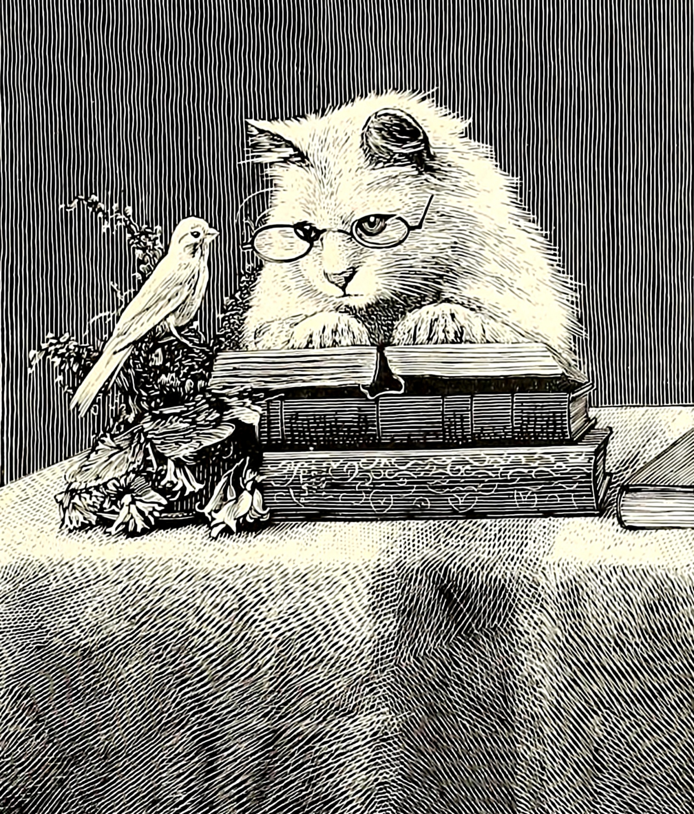
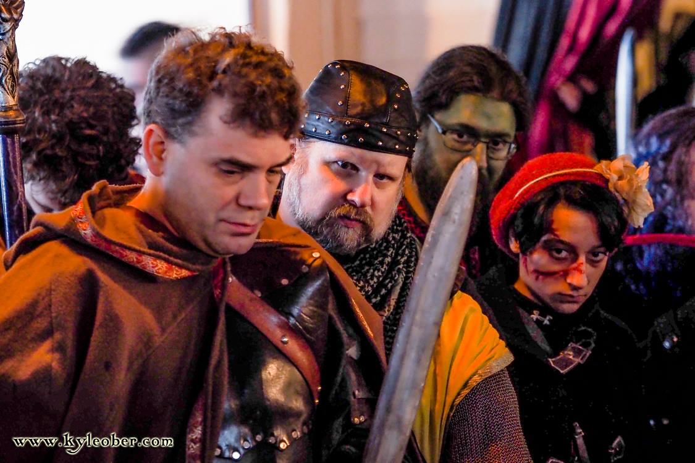

I want to be a public librarian, but I have been wondering if I have narrowed my own scope. Getting my MLIS has opened my mind to what options I have for the future. Would academic librarianship be better or worse? Is the public library system for me? Could I do more good elsewhere? Is becoming a data scientist a better option? A web developer? Not with my level of coding, certainly. Currently, I still would like to try as hard as possible to work with incarcerated patrons in person and if I can, do reference by mail.

I know lots of different avenues of librarianship could be equally fulfilling as long as I feel like I'm genuinely helping people. As long as that can happen, I'll be happy. I wasn't meant to sit at a desk in a hidden office telling someone they can't do something because they didn't fill out the correct form. Give me boots on the ground, always.
Click on the image to read more about what LARP is ☻
Examples of types of larps
| Genre | Features things like | Sub Genre Example |
|---|---|---|
| Fantasy | Magic/Elves | Vampire theme |
| Science Fiction | Advanced Tech/World Altering Circumstance | Zombie theme/Post Apocalyptic theme |
| Alternate Reality Games | Everyday things, just in "Character" | by the book Mystery/Historical Fic |

I have been larping for 11 years now. I had started out playing tabletop roleplay games like DnD and Vampire/World of Darkness, and the friends I made doing that, introduced me to this. It turns out you can absolutely play-pretend as an adult and I highly reccomend it. (in moderation) It's also a secretly physically active hobby. The amount of cardio and strength sometimes required was surprising to me. It definitely makes me understand the silly term "stick-jock" (hint: the stick is your foam weapon). I have met most of my lifelong friends through this hobby, and I hope i'll always be privileged enough to do it.
One hobby I have that i'm very very bad at is chess. I have linked Chess.com here, it's the website I practice on. I play the same three friends because I am too shy to play strangers. I started playing chess when I lived with several roommates. Myself and one of those roommates started playing chess after we became obsessed with the tv show, "The Queens Gambit". When we got busy, we would do our moves when we left for work, and when we came home. It was very "long form". I always lost; I still lose. I'm not good at chess. This doesn't mean I'll give up! I will continue to play and be unskilled for however long!